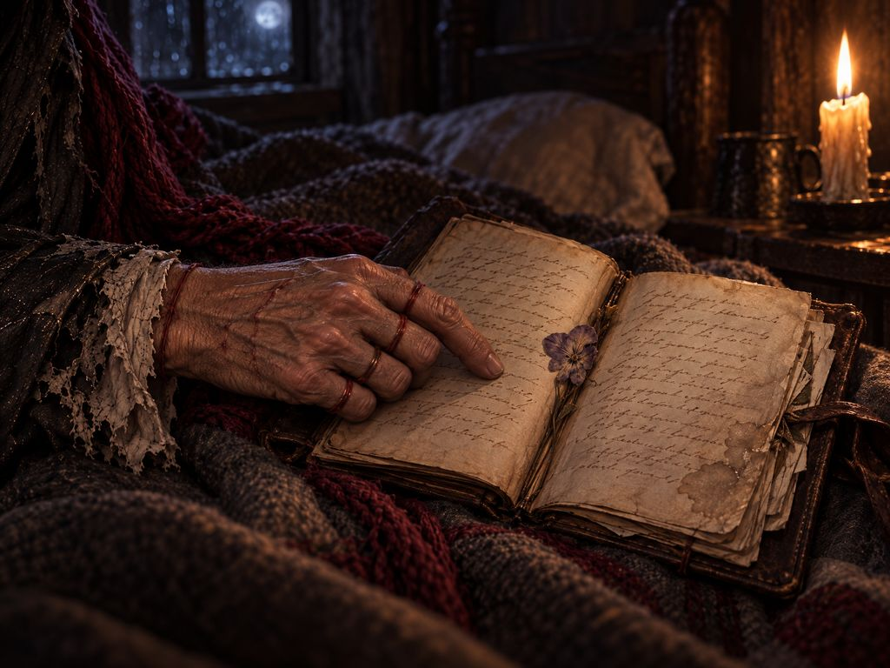

← В тавернуСтраница памяти III
Тетрадь Миранды
Каждую ночь он перечитывает её строки. Без них сон не приходит.
Откроется на 3 уровне.
Пока закрыто. Эту страницу откроют за столом, когда придёт время.

← В тавернуСтраница памяти III
Каждую ночь он перечитывает её строки. Без них сон не приходит.
Откроется на 3 уровне.
Пока закрыто. Эту страницу откроют за столом, когда придёт время.